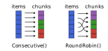

Getting started
index_chunks and chunks
The two main API functions are index_chunks and chunks. They return iterators that split the indices or elements of a given collection into chunks. But it's easiest to just consider an explicit example.
julia> using ChunkSplitters
julia> x = [1.2, 3.4, 5.6, 7.8, 9.1, 10.11, 11.12];
julia> for inds in index_chunks(x; n=3)
@show inds
end
inds = 1:3
inds = 4:5
inds = 6:7
julia> for c in chunks(x; n=3)
@show c
end
c = [1.2, 3.4, 5.6]
c = [7.8, 9.1]
c = [10.11, 11.12]Because we have set n=3, we will get three chunks. Alternatively, we can use size to specify the desired chunk size (the number of chunks will be computed).
julia> for c in chunks(x; size=2)
@show c
end
c = [1.2, 3.4]
c = [5.6, 7.8]
c = [9.1, 10.11]
c = [11.12]
julia> for inds in index_chunks(x; size=2)
@show inds
end
inds = 1:2
inds = 3:4
inds = 5:6
inds = 7:7Note that if n is set, chunks will have the most even distribution of sizes possible. If size is set, chunks will have the same size, except, possibly, the very last chunk.
When using n, we also support a minsize keyword argument that allows you to set a desired minimum chunk size. This will soften the effect of n and will decrease the number of chunks if the size of each chunk is too small.
julia> collect(index_chunks(x; n=5, minsize=2))
3-element Vector{UnitRange{Int64}}:
1:3
4:5
6:7Note how only three chunks were created, because the minsize option took precedence over n.
Enumeration
If we need a running chunk index, we can combine index_chunks and chunks with enumerate:
julia> for (i, inds) in enumerate(index_chunks(x; n=3))
@show i, inds
end
(i, inds) = (1, 1:3)
(i, inds) = (2, 4:5)
(i, inds) = (3, 6:7)
julia> for (i, c) in enumerate(chunks(x; n=3))
@show i, c
end
(i, c) = (1, [1.2, 3.4, 5.6])
(i, c) = (2, [7.8, 9.1])
(i, c) = (3, [10.11, 11.12])Indexing
Apart from iterating over chunks or index_chunks, you can also index into the resulting iterators:
julia> index_chunks(x; n=4)[1]
1:2
julia> index_chunks(x; n=4)[2]
3:4
julia> chunks(x; n=4)[1]
2-element view(::Vector{Float64}, 1:2) with eltype Float64:
1.2
3.4
julia> chunks(x; n=4)[2]
2-element view(::Vector{Float64}, 3:4) with eltype Float64:
5.6
7.8Return types
To avoid unnecessary copies, chunks tries to return views into the original data. For our input (Vector{Float64}) chunks will be SubArrays:
julia> eltype(chunks(x; n=3))
SubArray{Float64, 1, Vector{Float64}, Tuple{UnitRange{Int64}}, true}
julia> collect(chunks(x; n=3))
3-element Vector{SubArray{Float64, 1, Vector{Float64}, Tuple{UnitRange{Int64}}, true}}:
[1.2, 3.4, 5.6]
[7.8, 9.1]
[10.11, 11.12]For index_chunks we generally get (cheap) ranges:
julia> eltype(index_chunks(x; n=3))
UnitRange{Int64}
julia> collect(index_chunks(x; n=3))
3-element Vector{UnitRange{Int64}}:
1:3
4:5
6:7Non-standard arrays
Generally, we try to support most/all AbstractArrays. For example, OffsetArrays work just fine.
julia> using ChunkSplitters, OffsetArrays
julia> y = OffsetArray(1:7, -1:5);
julia> collect(index_chunks(y; n=3))
3-element Vector{UnitRange{Int64}}:
-1:1
2:3
4:5
julia> collect(chunks(y; n=3))
3-element Vector{SubArray{Int64, 1, OffsetVector{Int64, UnitRange{Int64}}, Tuple{UnitRange{Int64}}, true}}:
[1, 2, 3]
[4, 5]
[6, 7]Splitting strategy
Both index_chunks and chunks take an optional keyword argument split that you can use to determine how the input collection is split into chunks. We support to strategies: Consecutive() (default) and RoundRobin().
With Consecutive(), chunks are "filled up" with indices/elements one after another. They will consist of consecutive indices/elements will hold approximately the same number of indices/elements (as far as possible). Note that this is unlike Iterators.partition.
With RoundRobin(), indices or elements are scattered across chunks in a round-robin fashion. The first index/element goes to the first chunk, the second index/element goes to the second chunk, and so on, until we run out of chunks and continue with the first chunk again.

julia> using ChunkSplitters
julia> x = [1.2, 3.4, 5.6, 7.8, 9.1, 10.11, 11.12];
julia> collect(index_chunks(x; n=3, split=Consecutive()))
3-element Vector{UnitRange{Int64}}:
1:3
4:5
6:7
julia> collect(index_chunks(x; n=3, split=RoundRobin()))
3-element Vector{StepRange{Int64, Int64}}:
1:3:7
2:3:5
3:3:6
julia> collect(chunks(x; n=3, split=Consecutive()))
3-element Vector{SubArray{Float64, 1, Vector{Float64}, Tuple{UnitRange{Int64}}, true}}:
[1.2, 3.4, 5.6]
[7.8, 9.1]
[10.11, 11.12]
julia> collect(chunks(x; n=3, split=RoundRobin()))
3-element Vector{SubArray{Float64, 1, Vector{Float64}, Tuple{StepRange{Int64, Int64}}, true}}:
[1.2, 7.8, 11.12]
[3.4, 9.1]
[5.6, 10.11]